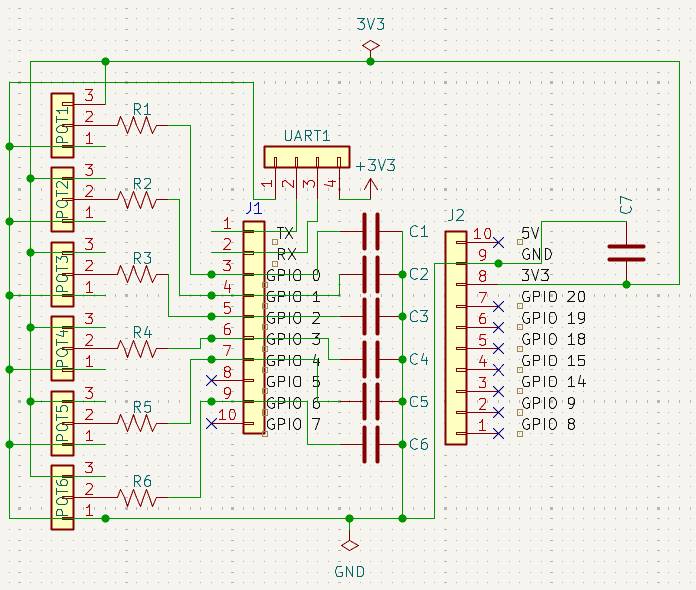
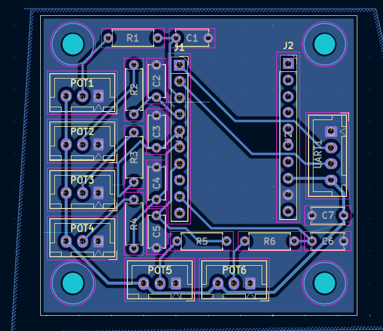

The SixEyes is an open-source, low-cost 3D-printable 6-degree-of-freedom robotic arm platform designed for VLA inference
View on GitHub
ESP32-S3-WROOM-1
Onboard 6.6V servo buck, 5V logic buck, and 3.3V LDO regulators.
Native compatibility for bridging laptop-assisted execution and real-time arm teleoperation.
Hardware framework designed to execute AI-planned tasks driven by Vision-Language-Action (VLA) models.

KiCad Schematic Layout

1 Layer PCB Routing
The schematic was built around the ESP32 to focus on getting angle datas through potentiometer with the leader arm. To ensure smoother signal, we implemented RC low-pass filters.
For the routing, the board was constrained to a single-layer design, so that it can be prototype through the school's PCB cutting machine